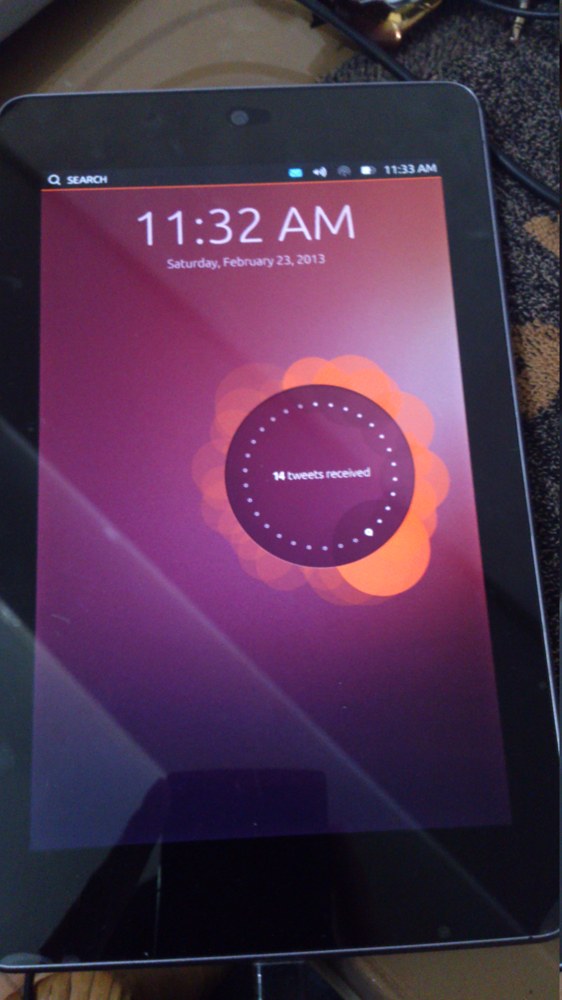
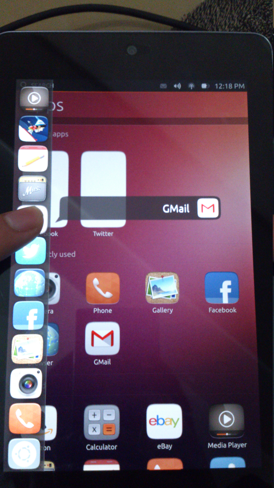
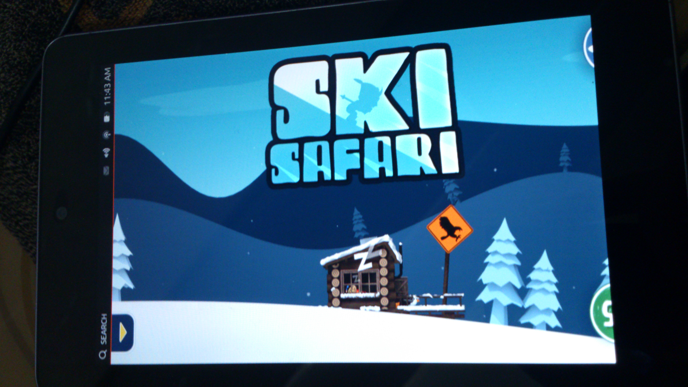
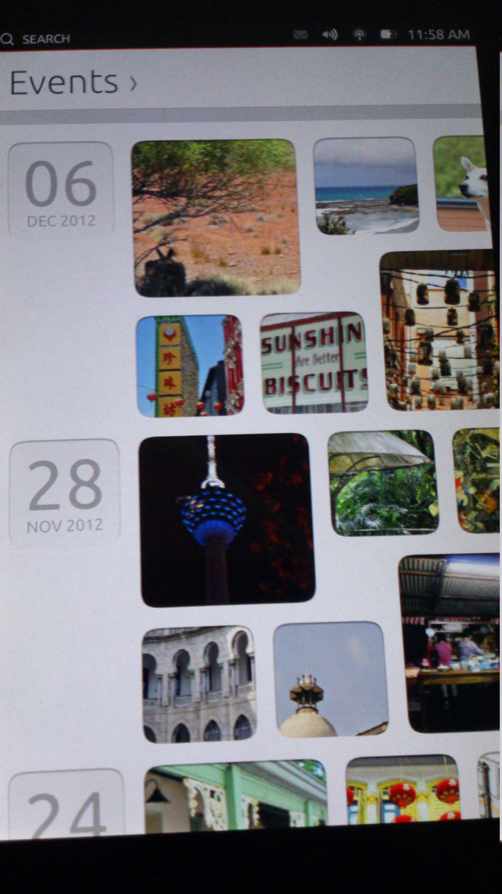
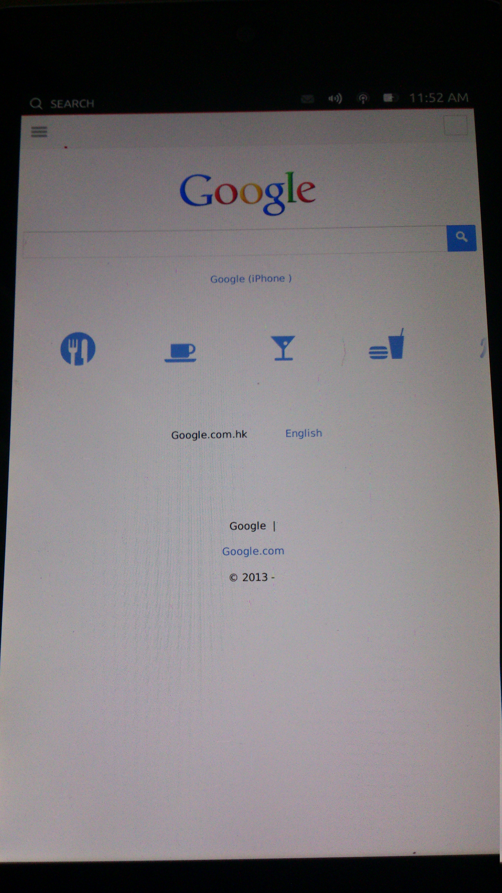
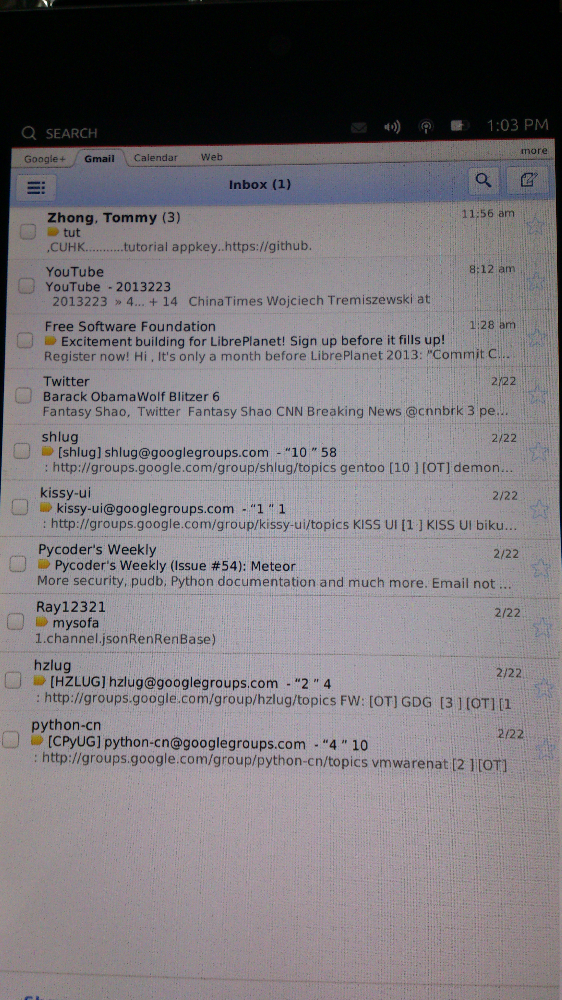
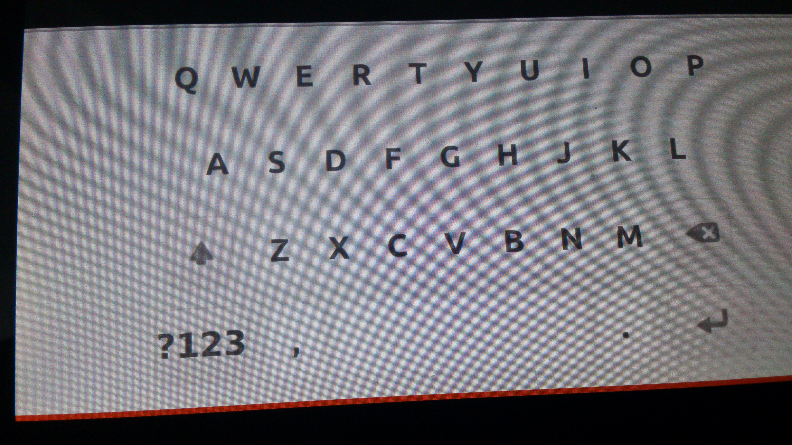
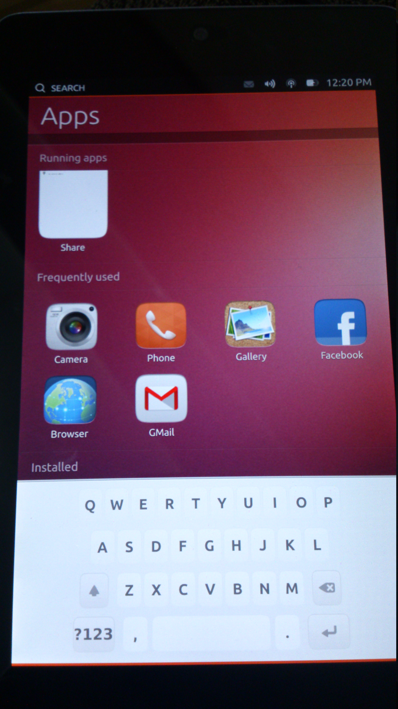

Ubuntu Touch Preview 尝鲜
前段时间Canonical发布了Ubuntu Touch Preview, 正好本人有Nexus 7可以一试(也不怕数据丢失).
安装
安装的过程很简单,wiki.ubuntu.com.
关于Android设备在Linux上的挂载问题, 可以参考这里
只是不知道是家里的网速慢还是其他的原因,下载这一过程花了很多时间.
体验
说实在的, 一段时间体验下来, 应该是因为是预览版(preview)所以很多功能都只是"摆设". 下面结合一下图片来讲解一下自己的体验.
先来看这个系统的Home Screen:

这个界面还是蛮漂亮的, 色彩也很有Ubuntu的特点, 不过那圈圈里的14 tweets received是硬编码进去的...略搓
App界面:

遗憾的是Available for download里的app还不能下载.
侧边栏选择App：

这个功能很好，而且与GNOME的Desktop版很像.
Game:

系统原有的一个游戏, Ski Safari, 只是不能玩……这点有点坑爹> <
Gallery:

浏览器:

Gmail：

键盘：

不得不说这个键盘亦是一个败笔……太小而两边的空白太多(难道是因为是平板的原因?!)
发现的一个Bug:

在切换的时候, 发现键盘不会自动移下去而要手动拨下去.
感受
- 使用下来感觉整个系统还是蛮流畅的, 当然还是有时候会有点顿卡的.
- 应用不多, 不过对于预览版而言还是不算缺陷的, wp作为一个产品不还是应用匮乏咩 : )
- 对于手势还是不了解,如果熟悉的话应该操作会更舒服点.
- 确实有很多bug, 不过还是可以原谅的.
- 体验还不错, 其实很期待作为一个真正的系统而非预览版的时候能达到什么样的程度.